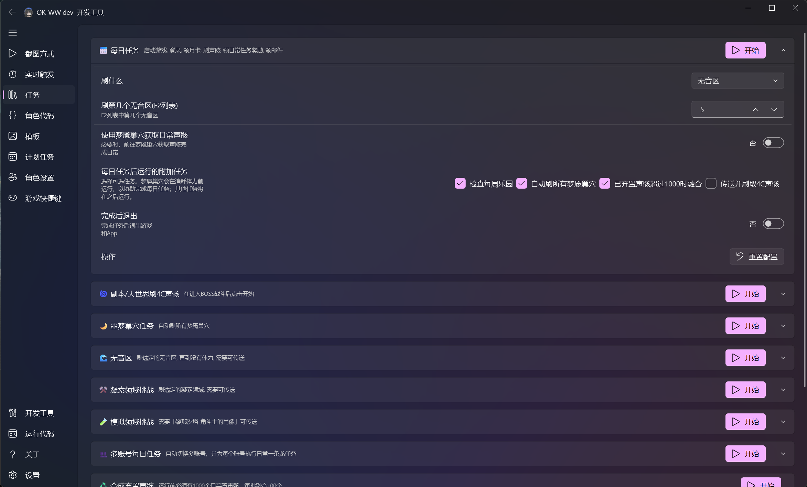
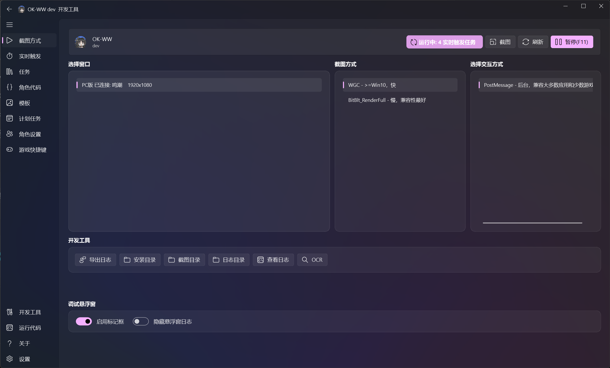
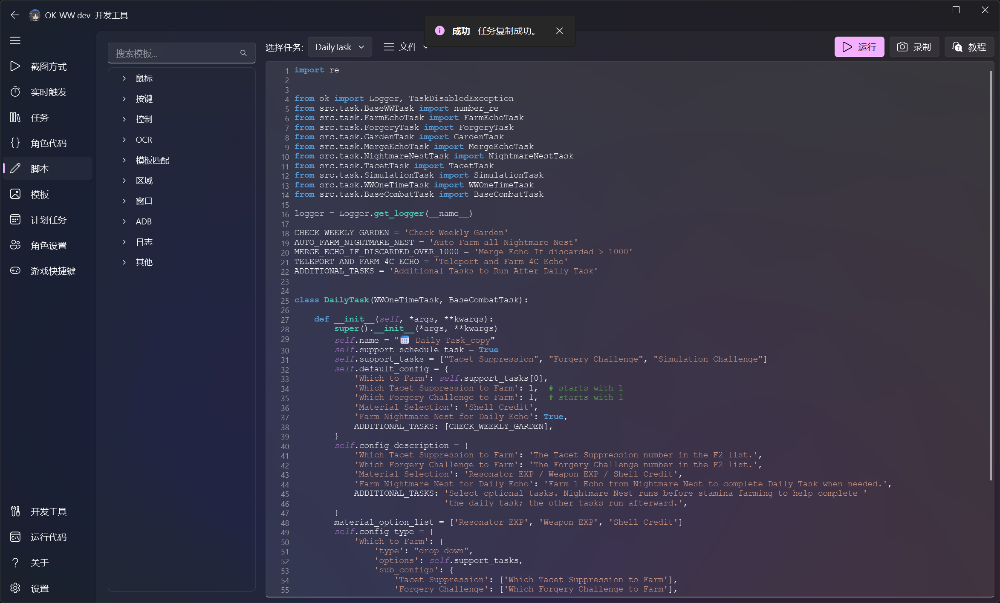
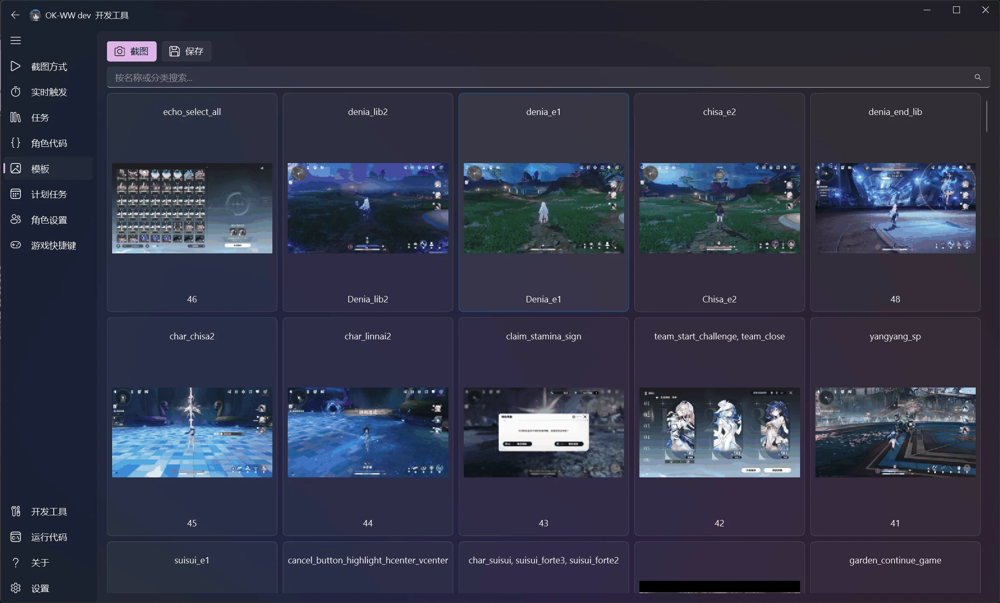
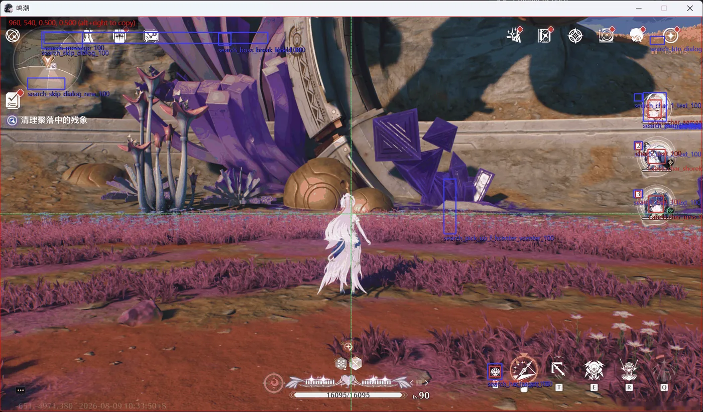

界面与开发工具
English · 文档中心 · 快速开始 · 编程代理提示词
桌面界面用于配置和运行已保存的任务。开发时通过 MCP 连接编程代理，让它在项目中编写并验证可复用 Python。代理使用 ok-script 截图和交互，不使用 Computer Use 工具。代理断开后，仍可通过界面查看证据并运行成果。
ok-script 将任务配置、设备连接、脚本开发、模板管理和识别调试集中在同一个桌面界面。本页通过界面截图说明各工具的用途和推荐工作流。
任务配置与执行

任务页显示项目提供的单次任务与组合任务。展开任务卡片后可以：
- 修改下拉选项、数字、开关和多选配置；
- 阅读每个配置项的说明；
- 启动单个任务并查看当前状态；
- 重置任务配置；
- 折叠暂时不需要修改的任务。
项目开发者通过 BaseTask.default_config、config_description 和 config_type 定义这些控件。用户不需要修改 Python 代码即可调整运行行为。
截图与交互方式

截图方式页用于连接目标并选择截图、输入后端：
- 在“选择窗口”区域连接 Windows 游戏、模拟器或 ADB 设备。
- 选择适合目标的截图方式。WGC 通常速度较快，BitBlt 兼容性更好。
- 选择交互方式，例如适合后台操作的
PostMessage。 - 使用“截图”和“OCR”等开发工具验证画面是否正确。
- 调试时启用标记框，观察识别区域与结果。
如果画面正常但输入没有响应，请检查交互方式和管理员权限。更多配置步骤参见快速开始。
HDR 游戏使用普通 WGC。仅在使用 Windows AutoHDR 时（不推荐），
将 windows.capture_method 设置为 ['WGC_HDR', 'WGC', 'BitBlt']。
WGC_HDR 使用 WindowsGraphicsCaptureHDRMethod 捕获浮点 HDR 像素，
按照 BetterGI 的四分之一曝光和线性 RGB 转 sRGB 算法转换为 SDR。
HDR 截图启动失败时会尝试后续截图方式。SDR 内容应选择普通 WGC；
固定曝光转换可能使 SDR 画面变暗，也不能精确逆转所有游戏的 HDR 色调映射。
HDR 转换通过 CPU 查找表完成。使用 WGC_HDR 时不显示 Auto HDR 启动提醒；
回退到其他截图方式后仍会检查并提醒。
脚本与 API 浏览

脚本页将任务源码与常用 API 模板放在同一界面：
- 左侧按鼠标、按键、OCR、模板匹配、ADB 等类别浏览 API；
- 在任务下拉框中切换项目任务；
- 运行或录制脚本，快速验证较小的自动化片段；
- 通过模板插入常见调用，减少手工输入错误。
内置编辑器适合查看和快速实验；较大的代码修改仍建议使用 PyCharm 或 VS Code，并配合自动化测试。
模板素材管理

模板页以图片卡片展示 COCO 截图和标注类别。你可以：
- 截取新的模板源图；
- 按名称或类别搜索；
- 查看每张截图包含的识别特征；
- 打开标注工具调整框选区域；
- 使用默认的 Split(Recommend)（拆分，推荐）导出独立的特征 PNG。
保存目标仍为 assets 或 ok_tasks/assets，拆分导出写入其 templates 子目录。
Compress (obsolete)（压缩，已废弃）仅为兼容保留。文件名格式和校验规则见模板导出格式。
标注时优先使用计划支持的最高分辨率，并选择稳定、具有区分度且不包含动态文字的区域。详细工作流参见进阶指南。
调试浮层

调试浮层把识别过程直接绘制在捕获画面上：
- 矩形框显示搜索区域和匹配结果；
- 标签显示特征名称、阈值或置信度；
- 中心辅助线用于检查相对坐标和屏幕区域；
- 多个重叠结果可以帮助发现模板过宽、阈值过低或搜索区域不准确等问题。
浮层只用于开发和诊断。正式任务逻辑应依赖 find_one、wait_feature、ocr 等 API 的返回值，而不是浮层状态。
通知设置
通知设置位于“设置 → 通知”，默认开启 Windows 系统托盘通知，其余渠道默认关闭。启用某个渠道后才会显示对应的配置字段。
SMTP 邮件通知
SMTP 渠道基于 Python 标准库 smtplib 发送邮件，不需要额外依赖：
- 打开 SMTP Notification 开关，展开 SMTP 配置字段。
- 填写 SMTP Host（服务器地址）与 SMTP Port（端口：587 使用 STARTTLS，465 使用隐式 SSL/SMTPS）。
- 填写 SMTP Username 与 SMTP Password，建议使用邮箱服务商提供的“应用专用密码”而不是登录密码。
- 填写 SMTP Default Sender（发件人地址，即邮件的 From 头）与 SMTP Default Recipient（收件人，多个地址用英文逗号分隔）。
- 开启 SMTP Use TLS：端口 587 时自动使用 STARTTLS，端口 465 时自动使用隐式 SSL（SMTPS）。
常用服务器参数示例：
- Gmail：
smtp.gmail.com:587，需在 Google 账号中开启两步验证并生成应用专用密码。 - QQ 邮箱：
smtp.qq.com:587，需在 QQ 邮箱设置中开启 SMTP 服务并获取授权码。
邮件主题为通知标题，正文为通知消息；随通知附带的截图会以 PNG 附件发送，单张附件编码失败不会影响其他附件。
推荐工作流
- 将编程代理连接到项目 MCP 服务，验证目标截图。
- 参考提示词示例描述任务需求。
- 让代理发现已安装 API、保存 Python 代码和素材，并通过 MCP 验证。
- 出错时检查日志、截图和识别浮层。
- 开发完成后关闭 MCP，从 GUI 运行已注册任务。
- 需要修改时再连接代理，为识别或恢复问题添加回归测试。
 在 GitHub 查看源文件 ↗
在 GitHub 查看源文件 ↗